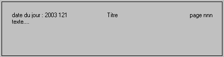

Si l'objet graphique ne comporte que du texte, la commande <t> est facultative.
Pour passer à la ligne à l'intérieur d'un texte, utilisez le caractère | (la commande <S> permet également de passer à la ligne).
<t>texte.
Le texte est cadré à gauche.
<tt>texte.
Le texte n'est jamais cadré. Il est affiché à partir de la position courante.
<l>texte.
Texte cadré à gauche.
<r>texte.
Texte cadré à droite.
<m>texte.
Texte centré.
Exemple
ff.graph = "<L>date du jour : " & today
ff.graph &= "<M>Titre<R>page nnn<s><l>texte...."

<nv>
Cette commande permet d'annuler le centrage vertical. En effet, si l'objet graphique a un encadrement de précisé, son contenu est automatiquement centré horizontalement et verticalement.
<nh>
Cette commande permet d'annuler le centrage horizontal. En effet, si l'objet graphique a un encadrement de précisé, son contenu est automatiquement centré horizontalement et verticalement.
<ctx> 1 ou 0
Cette commande permet de centrer (1) ou non (0) le texte sur x.
<cty> 1 ou 0
Cette commande permet de centrer (1) ou non (0) le texte sur y.
Couleurs de fond